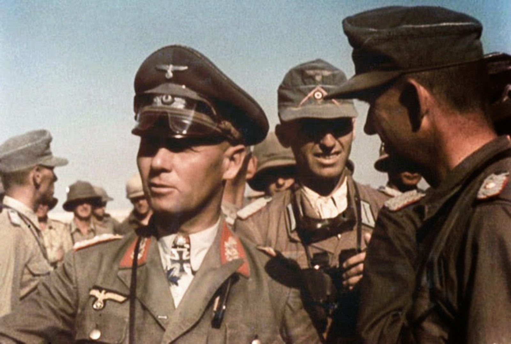

Introduction
Erwin Rommel, nicknamed the "Desert Fox," was a German field marshal during World War II. He is best known for his command of the Afrika Korps in North Africa, where his tactical brilliance and leadership made him a formidable opponent. Rommel's legacy as a military leader is admired for his boldness, innovation, and respect for his enemies.
Key Achievements of Erwin Rommel
- Led the German Afrika Korps during the North African Campaign, achieving significant victories.
- Developed innovative tactics and strategies, earning him the respect of both Axis and Allied forces.
- Played a key role in the Battle of El Alamein, though ultimately defeated in 1942.
- Defended Germany during the D-Day invasion in 1944, though unable to prevent the Allied landing.
Important Events During Rommel’s Military Career
- 1940: Served in the invasion of France and gained recognition for his leadership in the 7th Panzer Division.
- 1941: Appointed as the commander of the Afrika Korps, starting his campaigns in North Africa.
- 1942: Led the Axis forces to notable victories in the early stages of the North African Campaign.
- 1942: Defeated at the Second Battle of El Alamein, marking the beginning of the Axis retreat from Africa.
- 1944: Appointed to defend France against the Allied invasion, but ultimately failed to prevent D-Day.
- 1944: Following a failed assassination attempt on Hitler, Rommel was forced to commit suicide.
Learn More
For more detailed information about Erwin Rommel, you can visit this Wikipedia page.
